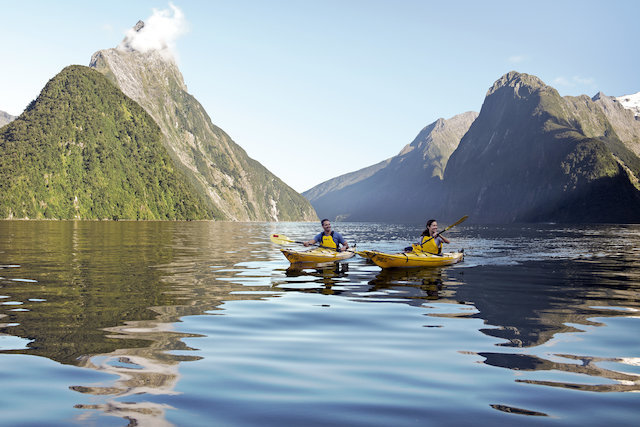

Travel:
Places I have been to:
- America - Florida.
- England - London.
- Scotland - Elgin.
- Spain - Barcelona, Madrid, Lanzarote & Tenerife.
- France - Paris, La Rochelle & Jarnac.
- Northen Ireland - Belfast.


Places I would like to visit:
- New Zealand:
- New Zealand is undoubtedly one of the most spectacular places on earth.
- It may seem like a long way to travel, but visiting will be one of the most memorable trips of my lifetime.
- New Zealand has an amazing range of breathtaking scenery, from subtropical forests, beaches, and lakes.
- The long, warm summers are ideal for spending at one of the country's many great beaches.
- Top 10 reasons to visit New Zealand.

- New York (USA)
- This city is often considered the center of the universe in terms of finance, culture, fashion and more.
- I'd love to go to New York city during the Christmas period to see the Rockefeller Christmas Tree, the decorated stores along Fifth Avenue, skating in Central Park, or the Rockettes at Radio City Music Hall.
- It’s the type of holiday experience often immortalized in the movies, and yet I could experience it myself.
- Japan
- I'd like to experience Japan's 'bullet train'. It's the best, easiest and most cost effective way to travel, traveling more than 300km an hour.
- I'd also like to visit Japan during cherry blossom season
Watch the timelapse video of blossoming trees in Tokyo, Kyoto and around Mt Fuji below